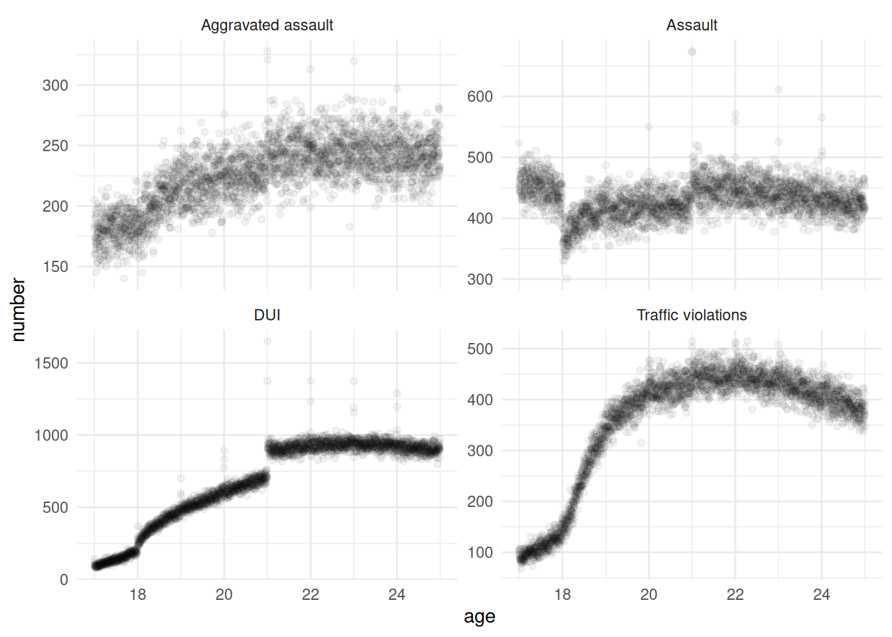

library(rio)
library(tidyverse)
library(rdrobust)
library(estimatr)
library(AER)Regression discontinuity and instrumental variables (IV)
Load the relevant packages
Start by loading the following packages:
Exercice 1: regression discontinuity design (RDD)
This exercise is inspired by Carpenter and Dobkin (2015). You are provided with a data set about crime rates in the US, which you can find at https://github.com/scpo-quantimethods/quantitative_methods_two/raw/main/exercices/exercices5/data/carpenter_dobkin_data.dta. You want to analyse the effect of alcohol on crime rates.
- Import the data. The codebook is the following :
agestands for the agearrested_forqualifies the reasons for which people have been arrested.DUIstands for driving under the influence.numberis the number of people of that age arrested for that reason.
- Run the following code :
p <- data_set %>% ggplot(aes(x = age, y = number)) +
geom_point(alpha = 0.05) +
facet_wrap(facets = vars(arrested_for), scales = "free_y") +
theme_minimal()
pDo you observe any “jump” or discontinuity in your graphs? If so, where?
Restrict your dataset to DUIs (driving under the influence).
Run your regression discontinuity using rdrobust, with age as the independent variable and number as the dependent variable, using a cutoff at 21 and a bandwidth of 2.
Is this a sharp or fuzzy RDD?
Does being allowed to drink alcohol affect the number of DUIs?
Repeat the analysis using the number of assaults and the legal majority at 18 to examine whether turning 18 has an impact on the number of assaults.
library(rio)
library(tidyverse)── Attaching core tidyverse packages ──────────────────────── tidyverse 2.0.0 ──
✔ dplyr 1.2.1 ✔ readr 2.1.6
✔ forcats 1.0.1 ✔ stringr 1.6.0
✔ ggplot2 4.0.2 ✔ tibble 3.3.1
✔ lubridate 1.9.4 ✔ tidyr 1.3.2
✔ purrr 1.2.2
── Conflicts ────────────────────────────────────────── tidyverse_conflicts() ──
✖ dplyr::filter() masks stats::filter()
✖ dplyr::lag() masks stats::lag()
ℹ Use the conflicted package (<http://conflicted.r-lib.org/>) to force all conflicts to become errorslibrary(rdrobust)
library(estimatr)
library(AER)Loading required package: car
Loading required package: carData
Attaching package: 'car'
The following object is masked from 'package:dplyr':
recode
The following object is masked from 'package:purrr':
some
Loading required package: lmtest
Loading required package: zoo
Attaching package: 'zoo'
The following objects are masked from 'package:base':
as.Date, as.Date.numeric
Loading required package: sandwich
Loading required package: survivalcarpenter_dobkin_prepared <- import("data/carpenter_dobkin_data.dta")
glimpse(carpenter_dobkin_prepared)Rows: 11,688
Columns: 3
$ age <dbl> 16.99726, 16.99726, 16.99726, 16.99726, 17.00000, 17.0000…
$ arrested_for <chr> "Assault", "Aggravated assault", "DUI", "Traffic violatio…
$ number <dbl> 523, 205, 120, 100, 451, 183, 139, 103, 442, 160, 94, 104…p <- carpenter_dobkin_prepared %>% ggplot(aes(x = age, y = number)) +
geom_point(alpha = 0.05) +
facet_wrap(facets = vars(arrested_for), scales = "free_y") +
theme_minimal()
p
carpenter_dobkin_dui_only <-
carpenter_dobkin_prepared |>
filter(
arrested_for == "DUI",
abs(age - 21) < 2
)
carpenter_dobkin_assault_only <-
carpenter_dobkin_prepared |>
filter(
arrested_for == "Assault",
abs(age - 18) < 2
)
rdd_dui <- rdrobust(
# specifies the DV
y = carpenter_dobkin_dui_only$number,
# specifies the running variable of the RDD
x = carpenter_dobkin_dui_only$age,
# specifies the cutoff
c = 21,
# specifies the bandwidth, here the unit of analysis is years
h = 2,
all = TRUE
)
rdd_assault <- rdrobust(
# specifies the DV
y = carpenter_dobkin_assault_only$number,
# specifies the running variable of the RDD
x = carpenter_dobkin_assault_only$age,
# specifies the cutoff
c = 18,
# specifies the bandwidth, here the unit of analysis is years
h = 2,
all = TRUE
)
rdd_dui |> summary()Sharp RD estimates using local polynomial regression.
Number of Obs. 1459
BW type Manual
Kernel Triangular
VCE method NN
Number of Obs. 729 730
Eff. Number of Obs. 729 730
Order est. (p) 1 1
Order bias (q) 2 2
BW est. (h) 2.000 2.000
BW bias (b) 2.000 2.000
rho (h/b) 1.000 1.000
Unique Obs. 729 730
=======================================================================================
Method Coef. Std. Err. z P>|z| [ 95% C.I. ]
=======================================================================================
Conventional 192.790 6.221 30.989 0.000 [180.597 , 204.984]
Bias-Corrected 207.423 6.221 33.341 0.000 [195.230 , 219.617]
Robust 207.423 11.524 17.999 0.000 [184.837 , 230.010]
=======================================================================================rdd_assault %>% summary()Sharp RD estimates using local polynomial regression.
Number of Obs. 1096
BW type Manual
Kernel Triangular
VCE method NN
Number of Obs. 366 730
Eff. Number of Obs. 366 730
Order est. (p) 1 1
Order bias (q) 2 2
BW est. (h) 2.000 2.000
BW bias (b) 2.000 2.000
rho (h/b) 1.000 1.000
Unique Obs. 366 730
=======================================================================================
Method Coef. Std. Err. z P>|z| [ 95% C.I. ]
=======================================================================================
Conventional -58.614 2.668 -21.969 0.000 [-63.843 , -53.385]
Bias-Corrected -66.997 2.668 -25.111 0.000 [-72.226 , -61.768]
Robust -66.997 4.033 -16.612 0.000 [-74.901 , -59.092]
=======================================================================================Exercice 2 : Instrumental variables (IV)
You are interested in analysing the effects of education on future earnings (do more educated people earn more money). To address the potential endogeneity, they need an instrument that affects years of education without being influenced by other factors like ability or family background. They use the compulsory schooling law, which creates differences in school timing based on birth date. Children born early in the year start school older than those born later, and because of the minimum school-leaving age, early-born children (in the year) can legally leave school sooner than late-born children. This generates variation in education that is largely independent of individual characteristics. You can import the data from https://github.com/scpo-quantimethods/quantitative_methods_two/raw/main/exercices/exercices5/data/angrist_krueger.dta.
Import the data set.
The code book is the following. The data set contains data about men’s earnings in 1980 (census extract):
log_wage: log weekly wageeducation: years of schoolingyob: year of birthqob: quarter of birthsob: state of birth
data_set <- import("data/angrist_krueger.dta")
summary(data_set) log_wage education yob qob
Min. :-2.342 Min. : 0.00 Min. :30.0 Min. :1.000
1st Qu.: 5.637 1st Qu.:12.00 1st Qu.:32.0 1st Qu.:2.000
Median : 5.952 Median :12.00 Median :35.0 Median :3.000
Mean : 5.900 Mean :12.77 Mean :34.6 Mean :2.506
3rd Qu.: 6.257 3rd Qu.:15.00 3rd Qu.:37.0 3rd Qu.:3.000
Max. :10.532 Max. :20.00 Max. :39.0 Max. :4.000
sob
Min. : 1.00
1st Qu.:19.00
Median :34.00
Mean :30.69
3rd Qu.:42.00
Max. :56.00 - Run the first-stage regression, regressing education on the quarter of birth. Is the instrument working ? Is it strong ? How much is the F-statistic ?
first_stage <- lm(education ~ qob+yob, data = data_set)
summary(first_stage)
Call:
lm(formula = education ~ qob + yob, data = data_set)
Residuals:
Min 1Q Median 3Q Max
-13.1072 -1.0571 -0.6394 2.2223 7.5803
Coefficients:
Estimate Std. Error t value Pr(>|t|)
(Intercept) 10.579454 0.069315 152.628 <2e-16 ***
qob 0.050174 0.005133 9.775 <2e-16 ***
yob 0.059669 0.001965 30.369 <2e-16 ***
---
Signif. codes: 0 '***' 0.001 '**' 0.01 '*' 0.05 '.' 0.1 ' ' 1
Residual standard error: 3.276 on 329506 degrees of freedom
Multiple R-squared: 0.003096, Adjusted R-squared: 0.00309
F-statistic: 511.6 on 2 and 329506 DF, p-value: < 2.2e-16- Run the two-stage regression, regressing the wage using the fitted values of education. How can you interpet that result ?
data_set$fitted_education <- first_stage$fitted.values
two_stage <- lm(log_wage~fitted_education+yob, data = data_set)
summary(two_stage)
Call:
lm(formula = log_wage ~ fitted_education + yob, data = data_set)
Residuals:
Min 1Q Median 3Q Max
-8.2518 -0.2609 0.0612 0.3612 4.6408
Coefficients:
Estimate Std. Error t value Pr(>|t|)
(Intercept) 4.828198 0.227233 21.248 < 2e-16 ***
fitted_education 0.102287 0.021197 4.826 1.40e-06 ***
yob -0.006775 0.001332 -5.086 3.66e-07 ***
---
Signif. codes: 0 '***' 0.001 '**' 0.01 '*' 0.05 '.' 0.1 ' ' 1
Residual standard error: 0.6788 on 329506 degrees of freedom
Multiple R-squared: 7.851e-05, Adjusted R-squared: 7.244e-05
F-statistic: 12.94 on 2 and 329506 DF, p-value: 2.411e-06## A one year increase in education caused by the exogeneous instrument leads to a +9.9% increase in wages- Run the 2SLS using the
ivregestimator. Have a look at the diagnostic usingsummary(two_sls, diagnostics = TRUE)and interpret those. Are the estimates different ?
two_sls <- ivreg(log_wage ~ education |qob, data = data_set)
summary(two_sls, diagnostics= TRUE)
Call:
ivreg(formula = log_wage ~ education | qob, data = data_set)
Residuals:
Min 1Q Median 3Q Max
-8.95910 -0.25117 0.07023 0.35203 4.79936
Coefficients:
Estimate Std. Error t value Pr(>|t|)
(Intercept) 4.63295 0.25006 18.527 < 2e-16 ***
education 0.09922 0.01958 5.067 4.05e-07 ***
Diagnostic tests:
df1 df2 statistic p-value
Weak instruments 1 329507 100.653 <2e-16 ***
Wu-Hausman 1 329506 2.144 0.143
Sargan 0 NA NA NA
---
Signif. codes: 0 '***' 0.001 '**' 0.01 '*' 0.05 '.' 0.1 ' ' 1
Residual standard error: 0.6445 on 329507 degrees of freedom
Multiple R-Squared: 0.09849, Adjusted R-squared: 0.09849
Wald test: 25.67 on 1 and 329507 DF, p-value: 4.049e-07 - Run the 2SLS using the
ivrobust()estimator. Do you notice something different in the estimates or their standard deviations ?
two_sls <- iv_robust(log_wage ~ education |qob, data = data_set)
summary(two_sls, diagnostics= TRUE)
Call:
iv_robust(formula = log_wage ~ education | qob, data = data_set)
Standard error type: HC2
Coefficients:
Estimate Std. Error t value Pr(>|t|) CI Lower CI Upper DF
(Intercept) 4.63295 0.25048 18.497 2.404e-76 4.14202 5.1239 329507
education 0.09922 0.01961 5.059 4.226e-07 0.06078 0.1377 329507
Multiple R-squared: 0.09849 , Adjusted R-squared: 0.09849
F-statistic: 25.59 on 1 and 329507 DF, p-value: 4.226e-07- Re-run the IVs using the year of birth as additional control. Is the result changed ?